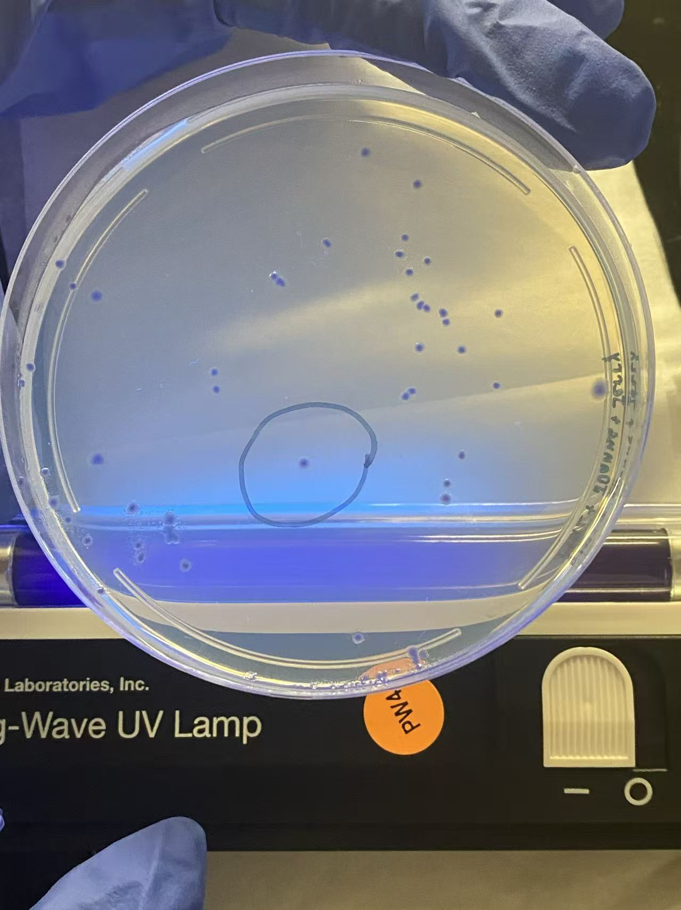
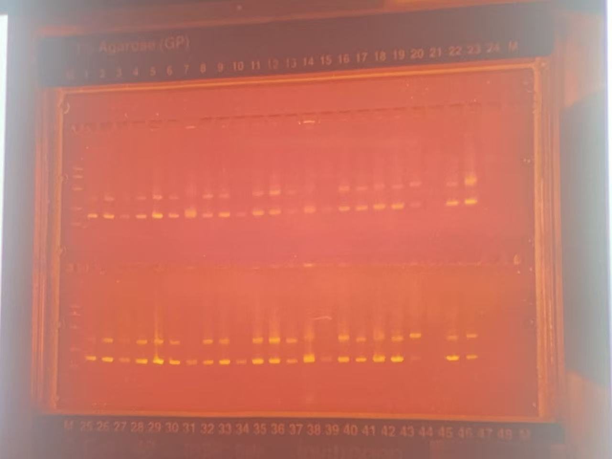

Synthetic biology
I explored genetic engineering and biotechnology through collaborative project work, from developing ideas to documenting results.
Research · iGEM · Science
I am interested in life science, public health, and interdisciplinary collaboration. These experiences taught me to ask better questions and make complex ideas easier to understand.
01 / iGEM
iGEM showed me how science, teamwork, and communication can work together to address real-world questions.
I explored genetic engineering and biotechnology through collaborative project work, from developing ideas to documenting results.
Working across disciplines taught me to connect experimental thinking with clear storytelling and thoughtful public engagement.
iGEM project wiki
Explore the 2025 project, methods, results, and team documentation.
Research essay
Read the published essay in the International Journal of Biology and Life Sciences.
Read my research essay ↗02 / Summer academy
The UPenn Summer Academy gave me space to deepen my research interests and learn alongside curious, ambitious peers.
I built a stronger foundation in life science while connecting classroom learning with questions about health and society.
The academy strengthened my curiosity, independence, and confidence in pursuing research that matters.

